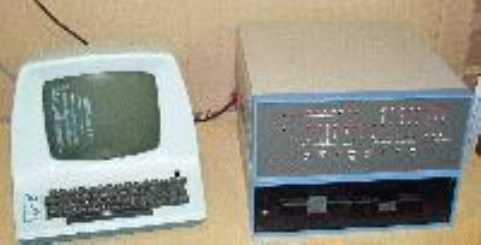

The Altair 8800, released in 1975 by MITS, is often considered the first commercially successful personal computer. It featured a microprocessor, the Intel 8080, and was initially sold as a kit that users had to assemble. Its open architecture and ability to run BASIC, developed by Bill Gates and Paul Allen, helped spark the personal computing revolution, inspiring countless hobbyists and laying the groundwork for future PCs. The Altair's popularity marked the beginning of the home computer era.
4o mini
